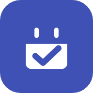

MyCalendar · hatályos: 2026. július 24.
A MyCalendar egy magánszemély által fejlesztett, nem üzleti célú, nyílt forrású alkalmazás. Kapcsolat: kristofka0031@gmail.com.
| Adat | Mire használjuk | Hol tárolódik |
|---|---|---|
| Google-fiókod alapadatai (név, e-mail cím, profilkép) | Bejelentkezés, hogy az adataid a saját fiókodhoz kötődjenek | Firebase Authentication (Google LLC) |
| Google Naptár eseményeid a következő 14 napra | Az események listázása, és az emlékeztetők időzítése | Csak a készülékeden, a memóriában — nem kerül szerverre |
| Ütemezett értesítések | Hogy az esemény előtti napon szóljon a telefon | A készüléked helyi értesítés-ütemezőjében |
| Az appban létrehozott adataid (téma-beállítás, naptárkategóriák és színeik, edzéstervek, heti teljesítések) | Hogy a beállításaid és terveid új eszközön is visszaálljanak, ha bejelentkezel | A készülékeden ÉS a Google-fiókodhoz kötve a Cloud Firestore-ban (Google LLC) |
Az app a calendar.events jogosultságot kéri. Ezt kizárólag a
közelgő eseményeid olvasására használja, hogy listázni tudja
őket és időzíthesse az emlékeztetőket. A hozzáférés a te saját
hozzáférési tokeneddel, közvetlenül a Google felé történik.
Az app a Google alábbi szolgáltatásait használja, amelyekre a Google saját adatkezelése vonatkozik (policies.google.com/privacy):
A naptáresemények csak addig léteznek, amíg az app fut — bezárás után eltűnnek a memóriából. Az appban létrehozott adataid (beállítások, kategóriák, edzéstervek) a Cloud Firestore-ban a fiókodhoz kötve maradnak, és 6 hónap inaktivitás után automatikusan, véglegesen törlődnek — a hozzájuk tartozó Firebase-fiókoddal (azonosító és a fenti alapadatok) együtt. Minden appindítás nullázza ezt a visszaszámlálót. Ha korábban szeretnéd töröltetni a fiókodat, írj a fenti e-mail címre.
Az alkalmazás nem gyerekeknek készült, és nem gyűjt tudatosan gyermekekre vonatkozó adatot.
Ha az app új funkciót kap, amely más adatot kezel, ez a tájékoztató frissül, és a fenti dátum megváltozik.